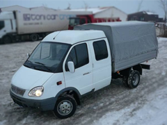
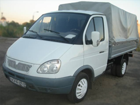
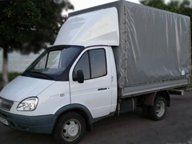
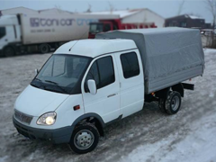
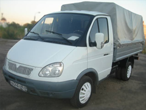
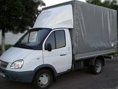

Переезды в Нижнем Новгороде
Грузоперевозки, грузчики, мусор
(831)419-16-89
8-908-154-2043
Транспорт: Газели различных модификаций



Design by Phreebie LLC

Спасибо за внимание!
Транспорт: Газели различных модификаций



Design by Phreebie LLC